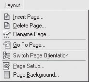

Лекция 4: Работа с документами
Основные команды работы с документами
Все основные команды для работы с документами расположены в меню File (Файл) (рис. 4.1).
Рис. 4.1. Меню File (Файл)
Создание документа. Шаблоны
Для создания документа с параметрами, установленными по умолчанию, используется команда меню New (Создать).
Если необходимо подготавливать большое количество однотипных файлов (например, визитные карточки одной и той же компании), то удобно сохранить один из таких документов в качестве шаблона. Для этого выполните команду Save As (Сохранить как) (см. ниже), выбрав в качестве формата сохранения CDT — CorelDRAW Template. Затем с помощью команды New From Template (Создать из шаблона) вы сможете быстро нарисовать новую визитную карточку без риска удалить образец.
Разумеется, в качестве основы для создаваемого документа можно выбрать любой из заранее созданных документов-шаблонов.
Открытие и закрытие документа
При помощи команды Open (Открыть) можно открыть ранее созданный документ.Вы можете открыть файл не только в формате CorelDRAW, но и любом другом графическом формате из поддерживаемых программой. Используя команду Close (Закрыть), можно закрыть текущий документ.
Сохранение документа
Команда Save (Сохранить) сохраняет текущий документ. Если сохранение происходит впервые, эта команда выполняется как Save As (Сохранить как) — вызывается диалоговое окно Save Drawing (Сохранить документ) (рис. 4.2).

Рис. 4.2. Окно Save Drawing (Сохранить документ)
Это диалоговое окно является стандартным окном сохранения документа для используемой вами операционной системы, но содержит некоторые дополнительные установки
Перечислим самые важные из них.
Save as type (Тип сохранения) — выбор формата, в котором будет сохранен документ. Можно задать не только формат CorelDRAW, но и конкурирующий с ним формат Adobe Illustrator, web-формат SVG и даже Macintosh PICT.
Version (Версия) — этот раскрывающийся список активен, если вы используете один из стандартных форматов Corel, и обозначает номер версии данного формата.
Selected only (Только выделенное) — установка этого флажка позволяет сохранить в виде отдельного документа только выделенные объекты.
Embed Fonts using TrueDoc (Внедрять шрифты с помощью TrueDoc) — позволяет сохранять вместе с документом использованные шрифты. Даже если на компьютере, на котором будет открываться документ, не окажется нужной гарнитуры, вид текста останется неизменным.
СОВЕТ.Основываясь на собственном опыте, авторы рекомендуют воздержаться от установки флажка Embed Fonts using TrueDoc (Внедрять шрифты с помощью TrueDoc), особенно если ваша работа предназначена для обработки посторонними людьми, например в репроцентре.
Часто команда Save As (Сохранить как) используется для сохранения текущего документа под новым именем и (или) в другом формате.
Для возврата открытого документа к последней сохраненной версии служит команда Revert (Возвратить) меню File (Файл).
Вставка и экспорт объектов
Вставка объектов
Команды вставки и экспорта графических и текстовых объектов также расположены в меню File (Файл).
Команда Acquire Image (Получить изображение) используется для вызова программы сканирования изображений из CorelDRAW.
Наиболее часто применяемая команда вставки графики и текста — Import (Импорт).
Она помещает в текущий документ изображение из файла. При этом вызывается диалоговое окно Import (Импорт) (рис. 4.3).
Рис. 4.3. Диалоговое окно Import (Импорт)
СОВЕТ.В документ можно поместить сразу несколько изображений. Для этого, используя клавиши Shift и Ctrl, выделите в диалоговом окне Import (Импорт) нужные файлы и щелкните на кнопке Import (Импорт). Кроме того, рекомендуем в списке Files of type (Тип файла) не использовать значение All File Formats (Файлы всех форматов), а точно выбрать тип импортируемого файла. Например, EPS(изображение лучше помещать как PostScript Interpreted (Интерпретируемый PostScript), хотя по умолчанию оно вставляется в виде Encapsulated PostScript (Внедряемый PostScript). Второй тип непозволяет редактировать форму, структуру и цвет изображения.
Если изображение большое, вы можете импортировать его не полностью. Замените в раскрывающемся списке, расположенном возле флажка Preview (Просмотр), значение Full Image (Полное изображение) на Crop (Обрезать). В этом случае после щелчка на кнопке Import (Импорт) будет вызвано дополнительное диалоговое окно (рис. 4.4), в котором можно будет задать интересующую вас область изображения.
Если выбрать в описываемом раскрывающемся списке пункт Resample (Изменить размер), будет вызвано соответствующее диалоговое окно, позволяющее изменить размеры помещаемого изображения.
Рис. 4.4. Диалоговое окно Crop (Обрезка)
Экспорт из документа
Команда Export (Экспорт) позволяет сохранить документ или выделенные объекты в другом формате. От команды Save As (Сохранить как) отличается набором форматов сохранения. Для сохранения файла в "понятном" для Microsoft Office формате EMF служит команда File \Rightarrow Export For Office (Экспорт для Office).
Для экспорта в PDF также используется особая команда — Publish To PDF (Экспорт в PDF). Формат PDF специально создан для того, чтобы документ выглядел одинаково на компьютерах с различными операционными системами, различным набором шрифтов и т. д. Команда Publish To PDF (Экспорт в PDF) представляет собой разновидность команды Save As (Сохранить как). Диалоговое окно Publish To PDF (Экспорт в PDF) (рис. 4.5) так и называется — Save As PDF (Сохранить в формате PDF).
В раскрывающемся списке PDF Style (Стиль PDF) можно выбрать один из стилей. Например, если вы собираетесь размещать документ в Сети, лучше всего подойдет PDF for Web, для передачи в репроцентр и печати — PDF for Prepress и т. д. Для более точной настройки параметров используйте кнопку Settings (Установки).
Особым типом экспорта можно считать применение команд подменю Send To (Отправить), которые позволяют переслать документ по электронной почте, сохранить его в определенных папках или создать для него ярлык на рабочем столе.
Рис. 4.5. Диалоговое окно Save As PDF (Сохранить в формате PDF)
Окно Document Info (Информация о документе)
Очень важное окно, которым часто пренебрегают начинающие пользователи. В диалоговом окне (рис. 4.6), появляющемся при выборе этой команды, отображается сводная информация о документе.
Часто именно она позволяет разобраться в том, почему файл не выводится на печать или занимает слишком много места на диске и в оперативной памяти. Установив или сняв соответствующие флажки, вы можете получить следующие сведения:
File (Файл) — общая информация о файле (расположение, размер, дата создания и т. д.);
Document (Документ) — количество, размер, ориентация страниц документа, количество слоев, а также разрешение, для которого документ оптимизирован;
Graphics objects (Графические объекты) — общие сведения о векторных объектах документа;
Text statistics (Статистика текста) — количество и характеристики текстовых объектов;
ВНИМАНИЕ.Обратите внимание на параметр Max. # of curve points (Максимальное количество узлов кривой). Слишком большое количество (более 1500) узлов может привести к проблемам при печати документа.
Рис. 4.6. Диалоговое окно Document Information (Информация о документе)
Bitmaps (Объекты точечной графики) — общие сведения о растровых объектах документа;
Styles (Стили) — количество и названия использованных стилей;
Effects (Эффекты) — количество и названия примененных эффектов;
Fills (Заливки) — характеристики использованных заливок;
Outlines (Обводки) — описание примененных обводок.
Информацию о документе можно либо сохранить в текстовом файле с помощью кнопки Save As (Сохранить как), либо распечатать, щелкнув на кнопке Print (Печать).
Общие параметры документов
После того как документ создан, вы можете изменить его размеры, ориентацию страницы, применяемые единицы измерения. Проще всего использовать для этого панель свойств. Если ни один объект не выделен, нужные установки появляются в ее левой части (рис. 4.7).
Из параметров панели свойств только два требуют пояснения. Во-первых, в крайнем левом списке можно выбрать один из стандартных размеров бумаги. Чаще всего используется А4 (210x297)— формат обычного писчего листа. Во-вторых, пара кнопок справа от выбора ориентации страницы определяет способ применения установок.
Если нажата верхняя кнопка, изменения коснутся всех страниц документа, если нажата нижняя — только текущей. Это позволяет создавать документ, состоящий из страниц разного размера и ориентации.
Некоторые команды управления параметрами документа вынесены в меню Layout (Макет) (рис. 4.8).
Рис. 4.7. Левая часть панели свойств, когда не выделен ни один объект
Рис. 4.8. Меню Layout (Макет)
Рассмотрим некоторые команды (остальные описаны в следующем разделе):
Switch Page Orientation (Изменить ориентацию страницы) — поворачивает страницу документа на 90°;
Page Setup (Параметры страницы) — вызывает страницу диалогового окна Options (Параметры), при помощи которой можно изменить параметры страницы документа (например, размеры);
Page Background (Фон страницы) — вызывает страницу диалогового окна Options (Параметры), при помощи которой можно изменить фон страницы документа.
Многостраничные документы
CorelDRAW позволяет создавать и использовать многостраничные документы. Команды работы со страницами документа собраны в меню Layout (Макет) (см. рис. 4.8):
Insert Page (Вставить страницу) — добавляет определенное количество страниц после или до заданной;
Delete Page (Удалить страницу) — удаляет страницы в заданном диапазоне (например, с пятой по восьмую);
Rename Page (Переименовать страницу) — присваивает странице собственное название. Это может оказаться удобным при работе с документами, содержащими большое количество страниц;
Go To Page (Перейти к странице) — осуществляет переход к заданной странице документа.
СОВЕТ.Во многих случаях удобнее пользоваться не меню Layout (Макет), а навигатором страниц (рис. 4.9), расположенным в левом нижнем углу окна документа. Ярлыки страниц в навигаторе можно перетаскивать, меняя порядок страниц. Если при этом удерживать нажатой клавишу Ctrl, происходит копирование страницы. Щелчок правой кнопкой мыши на ярлыке страницы вызывает меню, пункты которого повторяют некоторые команды меню Layout (Макет).
Рис. 4.9. Навигатор страниц
Поддержка многостраничности — достаточно редкое свойство для графического пакета. Если вы экспортируете несколько страниц документа CorelDRAW в формат, который не поддерживает данное свойство (например, Adobe Illustrator), будет создано несколько файлов — по одному на каждую страницу.